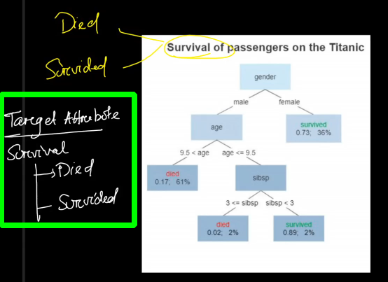
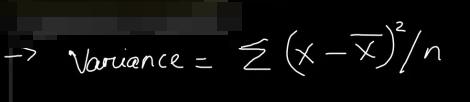

Post mid
Concept of Kernels and Basis Expansion
Let's say you wanna buy a mobile phone, On research you found two phones with exact same configurations you looking for.

Now the confusion is which one to choose. So, you asked your friend. He told that in city we have a service center of Apple I5 but not for Zobio 12. i.e he added a basis for decision.
If we try to understand it geometrically then,
In Geometry → Axis
Linear Algebra → Bias
Que : What will be the effect on data after introducing the basis?
Ans : Adding a dimension help us in linearly seperate the data
Que: What challenges we face on introducing basis expansion?
Ans : → We have to transform the points
→ We have to calculate the similarity w.r.t this hyperplane.
These tasks are massive in terms of computation.
Now to transform 3D to 9D we have to do so much computation.
What if I give you a function K() //also known as kernel function.
Dot product of X' & Y' from above also 1024 and via kernel function also 1024 but here the computation is much less.
~~~~~~~~~~~~~~~~~~~~~~~~~~~~~~~~~
Support Vector Machine (SVM)
Let's understand a scenerio first. We are given some points and we trying to fit a classifier to it.
Now in least square method
→ Every data point contributes towards the decision making which increases computation
in KNN
→ Highly dependent on K (NP Hard)
→ Need to compute for each data which leads to increased computation.
Sol : Now if we observe the distribution then we find that chances of missclassification of A1 and A2 are too low(least contribution in boundary position).
So the Idea of SVM is for decision on position for boundary
Consider only those terms whose chances are high to get affected by the position of the boundary.
Let's fine tune the same idea.
Maximum Margine Classifier
Let's say we are given a data distribututed like the one shown below and we need to decide the position of boundary and the boundary width.
Now the question is who will decide where should the boundry lie so that no miss classification happens.
The Idea
Consider only those data who has the highest probability of being miss classified. We take those element and draw the boundary at the mean point of those data.
Que : What could be major problem / limitation for this classifier?
Ans : → Suppose we have an outlayer(blue point). So we need to shift our boundary i.e. Boundary is sensitive to the outliers(SOFT Boundary/ Soft Margin) and we can have more than one soft boundary(so now the problem arises to find the better out from it and it became optimization problem now).
Que So what is SVM?
Ans These are the points which are residing atleast on the decision edge or boundary of the decision edge and we define the boundary based on these points.
Example
Let's say we are given the following distribution
So the blue circled imgs are choosen as the support vectors as they have the chance of getting missclassified. But now the question is how to draw the boundary.
The margin can be choosen such that
→ The seperation between margin is maximum
→ A straight line can be drawn in middle of these margins.
Task : Can we imagine a straight line to seperate the data?
Sol : No we can't. This is liniary non seperable data.
With the existing dimension we can't seperate so what we will do we'll add one more feature(basis expansion). But we know that basis expansion comes with various challanges..let's have a look on some examples
Let's say we given,
So as it is not liniarly seperable we introduce one more dimension to it transform the points governed by the transformation function f=x2.

Now it's linearly seperable.
Now a kernel function does all the 3 task in one go.
Polynomial Kernel
Example 1:
Example 2:
~~~~~~~~~~~~~~~~~~~~~~~~~~~~~~~~~
Decision Tree
It is a greedy hierachical decision making model which can be used for regression and classifier depending upon the target attribute.
Steps involved:
⇒ Deciding the splitting attribute at each level
⇒ Deciding the pruning point.
Whenever we try to solve a decision tree we get three questions( ):
Terminology of decision tree:
Benefit of splitting : Step by step it reduces the data set.
Pruning : The process of limiting tree to only a specified depth and avoid having Decision/terminal nodes beyond that. It helps to avoid overfitting.

Now the 1st question , from where to start
Splitting Criteria
1) Ginne Index
2) Chi Square
Steps to calculate the chi- square
Similarly we try finding chi square for splitting based on different factors and we'll choose the one with highest value.
Properties of Chi- Square
3) Information Gain
Information Gain = 1- Entropy
Entropy : randomness / Disorganisation/ Impurity
Let's see a data
So as we move to the left we'll need more information to understand the data as it's getting impure.
Steps to calculate entropy of the node (For gender class)
So then we find information gain and the one which gives more info we choose that as splitting attr.
4) Reduction in Variance
This is what was our main motive behind all the above 3 options. Previous methods are only aplicable for categaorial data but this method could be used by continuous data.

Comparison of Tree based model with Linear Model
⇒ Choice of the model depends upon the data and type of problem.
⇒ Understand the relation between independent attribute and dependent attribute.
Avoiding Overfitting in tree based models

We need to achieve a better bias variance tradeoff.
Let's look a Underfitted tree
Let's say we have 100 attributes but we chose only two attributes as feature.
Let's look a Overfitted tree
Again in data we have 100 attribute we used 98 attributes as features.
Policies to avoid Overfitting
⇒ Setting up the constraints on tree size
• Max feature : Max no of features can be used
• Min sample split :
• Minimum sample number/ Max depth :
⇒ Tree pruning/Tree cutting
• We let the tree grow
• Discard the branches that doesn't yield better result.
~~~~~~~~~~~~~~~~~~~~~~~~~~~~~~~~~
Random Forest
It's a data structure that is made up of more than one tree.
Process:
⇒ Grow multiple tree simultaneously
⇒ Discard the tree that does not perform well.
----------------------------------------------------------------------------------------------------------------------
Ensemble Method
→ Group of predictive models to achieve better accuracy and stability
→ Better Bias Variance tradeoff.
Example:
BAGGING Stage
→It reduces the variance.

------------------------------------------------------------------------------------------------------------
Random Forest:
⇒ Deploy more than one decision tree
⇒ Voting mechanism is used to discard unperforming trees
⇒ Increased Computation
⇒ Black Box Model
⇒ Can work as both classifier and regression but not good
~~~~~~~~~~~~~~~~~~~~~~~~~~~~~~~~~
Expressing The Margin width in terms of Model Parameter
~~~~~~~~~~~~~~~~~~~~~~~~~~~~~~~~~
PCA
→ It reduces dimension of data.
Que: Why we reduce the dimensions?
Ans :
→It trims the data set. Model has to process less number of data.
→Helps in avoiding multicoliniarity. Avoids Overfitting.
→ Only the relavant info we process.
Que: Can we pick any random column/attribute and drop it?
Ans: No
Que: What should be the criteria?
Ans: Dropping that column doesn't affect the learning.
Que: How should we reduce the dataset?
Ans: This is primerely done by two process:
⇒ Feature Extraction
• Takes attribute as a feature
• Takes Linear combination of some attributes to form a featutre.
PCA is a feature extraction mechanism.